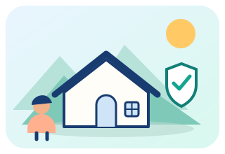
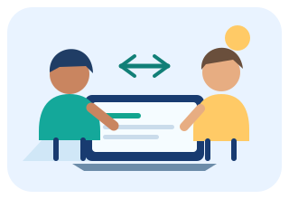
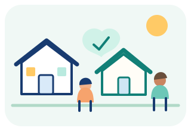
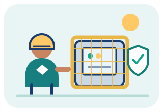

¿Qué va a hacer?
Reducir la extensión de los textos para mostrar primero las ideas principales, sin quitarte el acceso a los temas ni a sus actividades.
Conocimientos prácticos para cuidarte ante los riesgos, trabajar en equipo y construir tu futuro con más confianza.
Este modo mantiene las mismas secciones, títulos, tarjetas y herramientas. La diferencia es que las explicaciones se muestran más cortas.
Reducir la extensión de los textos para mostrar primero las ideas principales, sin quitarte el acceso a los temas ni a sus actividades.
Porque puedes aprender lo esencial sin tener que leer explicaciones largas desde el principio.
Cuando tengas poco tiempo, quieras repasar o prefieras leer poco. Usa Completo cuando necesites más detalles, ejemplos o información ampliada.
Conoce el propósito de ARKON: aprender para la vida, fortalecer la convivencia y desarrollar habilidades que nos preparan para el futuro.
Un segundo video para conocer más sobre la plataforma.
Aprende a anticiparte a los riesgos y a desarrollar competencias que puedes practicar cada día.

Conoce distintos fenómenos, organiza un plan de preparación y aprende a seguir orientaciones oficiales.

Practica comunicación, trabajo en equipo, resolución de problemas y herramientas útiles para el empleo.
Busca por tema, nivel o tipo de recurso. Guarda lo aprendido en este dispositivo.
Los contenidos enlazan con organismos oficiales y materiales originales para que puedas consultar más.
Una pregunta breve, una explicación útil. Puedes volver a intentarlo cuando quieras.
Tu progreso se guarda localmente en este dispositivo. No necesitas crear una cuenta.
Esta pregunta guía el proyecto: conocer los riesgos, aprender a prevenirlos, consultar información confiable y practicar formas de colaborar para cuidar a las personas y a la comunidad.
Podemos fortalecer la convivencia, la ciudadanía y las habilidades laborales aprendiendo a respetar las diferencias, escuchar y resolver conflictos mediante el diálogo; participando responsablemente en nuestra comunidad; y trabajando en equipo con comunicación, organización y pensamiento crítico. Para llevarlo a la práctica, ARKON reúne información de fuentes confiables sobre riesgos y emergencias, ayuda a reconocer rutas de atención, y permite organizar los resultados de una encuesta comunitaria para proponer medidas de prevención. Así convertimos lo aprendido en acciones concretas: identificar peligros, informar de manera responsable, apoyar sin exponernos y tomar decisiones basadas en evidencia.
Escuchar, reconocer diferencias, acordar soluciones pacíficas y tratar a todos con dignidad.
Conocer los riesgos locales, consultar canales oficiales y participar en acciones preventivas.
Distribuir roles, cumplir compromisos, comunicar peligros y resolver problemas en equipo.
Escuchar, resolver desacuerdos con respeto y construir acuerdos.

Conocer rutas de ayuda, participar y actuar con responsabilidad.

Comunicar, planear, trabajar en equipo y resolver problemas con seguridad.
Abre solo el tema que necesites. Los contenidos están agrupados para mantener esta página clara y fácil de recorrer.
La encuesta de ARKON reunió 20 respuestas completas. Para evitar repetir las cifras, el análisis con gráficos y tabla se presenta una sola vez en el cierre del ABP.
Qué aporta esta encuesta: identifica dificultades de convivencia, habilidades que los estudiantes quieren fortalecer y propuestas para mejorar la preparación laboral. Los datos se muestran de forma agregada, sin nombres.
El cuestionario está cerrado. Puedes consultar sus 20 preguntas con el botón «Explorar las 20 preguntas» que aparece junto a los resultados.
Contrasta la información, identifica quién la publica y respalda las afirmaciones importantes. No inventes cifras, autores, fechas ni referencias.
Fuentes de partida: Ministerio de Salud · SGRL, UNGRD y recomendaciones de emergencias de Cali.
Los gráficos deben ayudar a comprender rutas y protocolos, no decorar sin propósito.
Producto sugerido: una infografía sobre un dilema ético o un protocolo, con pasos ordenados, fuente consultada y fecha de revisión.
Muévete a una zona segura.
Sigue las instrucciones oficiales.
Aléjate de edificios dañados.
Llama al 123 ante una emergencia en Cali.
Our website, ARKON, helps people prepare for emergencies, understand local risks, and find reliable support. It also develops citizenship, teamwork, and job skills. By using trusted sources and real community survey data, we can make safer choices and contribute to a stronger community.
La web organiza la información en secciones navegables, usa controles accesibles y presenta rutas de prevención con enlaces a fuentes originales.
Distribución del aporte del equipo: Juan Esteban 40%, Santiago 40% y Stefania 20% (100% en total).
La planeación de ARKON muestra cómo pasamos de una pregunta sobre nuestra comunidad a una herramienta educativa. Organizamos el trabajo por etapas, tomamos decisiones, revisamos los resultados y aplicamos lo aprendido para construir y mejorar el producto.
El proyecto se desarrolló mediante investigación, organización del equipo, creación del sitio y revisión de su utilidad.
Definimos la pregunta problematizadora, el propósito de ARKON y a quién queríamos ayudar. Organizamos el equipo y distribuimos las responsabilidades según las fortalezas y tareas de cada integrante.
Consultamos información sobre convivencia, ciudadanía, prevención de riesgos y habilidades laborales. Comparamos contenidos, seleccionamos fuentes y relacionamos los temas de distintas áreas con situaciones de la vida cotidiana.
Convertimos la investigación en secciones, recursos visuales y contenidos navegables. Integramos la encuesta y sus resultados para que la página no se quedara solo en teoría, sino que también mostrara las opiniones recogidas.
Revisamos la presentación, los textos, los enlaces y la visualización en diferentes pantallas. Corregimos elementos que dificultaban la lectura y reorganizamos recursos para que la información fuera más fácil de entender.
Presentaremos el sitio, explicaremos por qué lo creamos, cómo investigamos, qué decisiones tomamos y qué aprendimos. También mostraremos los resultados de la encuesta y reconoceremos qué aspectos podrían seguir mejorándose.
Los contenidos de la web reúnen información consultada y la explican de manera organizada.
Analizamos 20 respuestas anónimas. La falta de comunicación fue la dificultad más señalada, con 8 respuestas (40%).
ARKON integra secciones educativas, recursos visuales, navegación y ajustes hechos durante la revisión.
Fortalecimos la comunicación, el trabajo en equipo, la responsabilidad, la investigación y la solución de problemas.
Conclusión del equipo: durante el desarrollo entendimos que aprender no es solamente reunir información. También es investigar, tomar decisiones, trabajar con otros, crear una solución, comprobar si funciona y mejorarla. ARKON es el resultado de aplicar ese proceso a una necesidad de nuestra comunidad.
El propósito del producto es convertir la investigación en una herramienta educativa clara, útil y mejorable.
Relaciona convivencia, ciudadanía, prevención de riesgos y competencias laborales en un mismo espacio.
Organiza recomendaciones, recursos y enlaces para que las personas sepan dónde ampliar la información.
La encuesta ya cuenta con 20 respuestas completas. Sus resultados orientan qué temas conviene fortalecer en la institución.
Resumen anónimo de las 20 respuestas completas recibidas en Tally. No se muestran nombres ni datos personales.
La falta de comunicación fue el problema más seleccionado: 8 de las 20 personas. Además, 7 de 20 identificaron el trabajo en equipo como una habilidad por fortalecer. A la vez, 18 de 20 expresaron disposición para desarrollar competencias útiles para su futuro laboral.
Estos resultados sugieren priorizar actividades de diálogo, resolución pacífica de conflictos y cooperación, aprovechando las ganas de aprender. La muestra corresponde a 20 personas y no necesariamente representa a toda la comunidad educativa.
Cada gráfico se calculó con las 20 respuestas reales. Las barras muestran frecuencia y porcentaje; el gráfico circular distribuye las respuestas de una misma pregunta y suma 100%. Las cifras están fijadas para que todos vean los mismos resultados.
¿Cómo califican actualmente la convivencia? Distribución de las 20 respuestas.
¿Qué situación afecta más la convivencia y el trabajo en equipo?
¿Qué habilidad consideran que necesitan fortalecer antes de ingresar al mundo laboral?
¿Qué tan preparados se sienten para ingresar al mundo laboral?
| Situación señalada | Frecuencia | Porcentaje |
|---|---|---|
| Falta de comunicación | 8 | 40% |
| Irresponsabilidad | 4 | 20% |
| Falta de compromiso | 3 | 15% |
| Falta de respeto | 3 | 15% |
| Intolerancia | 2 | 10% |
| Total | 20 | 100% |
Cálculo: frecuencia ÷ 20 × 100. Los porcentajes corresponden a la muestra encuestada, no necesariamente a toda la comunidad escolar. Estos gráficos son de solo lectura y no se pueden reiniciar ni editar desde ARKON.
Lectura general: los resultados sugieren reforzar la comunicación, la resolución pacífica de conflictos y el trabajo en equipo, aprovechando la disposición de la mayoría para seguir aprendiendo. Los porcentajes se calculan sobre 20 respuestas y pueden no representar a toda la comunidad educativa.
ARKON muestra cómo la tecnología puede apoyar la formación ciudadana y laboral al reunir información clara, actividades prácticas y fuentes consultables. La encuesta aplicada a 20 personas identifica la comunicación y el trabajo en equipo como aspectos importantes para fortalecer. Estos resultados son una primera referencia del grupo encuestado y no representan necesariamente a toda la institución. El sitio puede seguir mejorando con la retroalimentación del docente y de la comunidad.
Explora fichas educativas para identificar riesgos, planear con anticipación y responder con calma. Las alertas y decisiones de emergencia corresponden a las autoridades.
Aprende con ejemplos cotidianos, practica con situaciones laborales y revisa qué puedes fortalecer en tu estudio, tus proyectos o tu futuro empleo.
Un punto de partida en la Comuna 18 para conectar a las personas con servicios de salud, orientación, emergencias y organizaciones comunitarias de todo Cali.
Selecciona una entidad para verla en el mapa. Después indica un barrio o punto de referencia para consultar cómo llegar.
Google Maps calcula la distancia, las rutas disponibles y el tiempo estimado según el medio de transporte y las condiciones actuales. El cálculo se abre en Google Maps.
Mostrando recursos de la Comuna 18 y canales distritales.
Centro de atención de la Red de Salud de Ladera. Consulta la disponibilidad y los servicios antes de acudir.
Dirección del portafolio institucional 2024. Confirma la sede antes de desplazarte.Hace parte de la red pública de atención de la zona de ladera.
Dirección del portafolio institucional 2024. Confirma la sede antes de desplazarte.Consulta con la Red de Salud de Ladera qué servicios se encuentran disponibles en esta sede.
Dirección del portafolio institucional 2024. Confirma la sede antes de desplazarte.Hace parte de los puntos de atención registrados para la Comuna 18.
Dirección del portafolio institucional 2024. Confirma la sede antes de desplazarte.Consulta con la Red de Salud de Ladera los horarios y servicios disponibles.
Dirección del portafolio institucional 2024. Confirma la sede antes de desplazarte.Hace parte de la oferta territorial de la Red de Salud de Ladera.
*La dirección aparece así en el portafolio institucional 2024; confirma el dato directamente con la Red antes de acudir.Punto de oferta institucional con orientación ciudadana y servicios de salud, educación, empleo, atención social, cultura, deporte y trámites.
Los sábados atiende durante actividades o jornadas programadas. Confirma horarios y trámites antes de acudir.Canal de contacto territorial para orientación y asuntos de participación ciudadana de la comuna.
Datos del directorio institucional; confirma por teléfono antes de desplazarte.Organizaciones vecinales que promueven la participación, los acuerdos y proyectos para mejorar cada barrio. Consulta el inventario y ubica la junta correspondiente a tu sector.
La Secretaría de Participación publica inventarios oficiales y documentos por comuna.Canal distrital para comunicar emergencias, urgencias y desastres. Explica con calma qué sucede y dónde necesitas ayuda.
Para emergencias inmediatas. No reemplaza la atención médica ni las instrucciones de las autoridades.Escucha y teleorientación en salud mental. Es gratuita, confidencial y está disponible las 24 horas, todos los días.
Servicio distrital de orientación; ante peligro inmediato llama al 123.Canal gratuito de protección, emergencia y orientación para niñas, niños y adolescentes. Disponible las 24 horas.
Atención y orientación psicosocial y jurídica para mujeres. Consulta los canales y horarios vigentes antes de solicitar una cita.
Consulta las sedes y rutas de orientación psicosocial y jurídica relacionadas con situaciones del contexto familiar.
Consulta las organizaciones comunitarias registradas en las 22 comunas y los corregimientos. La página oficial permite revisar los inventarios publicados.
Página oficial modificada el 27 de mayo de 2026.Encuentra el centro de administración local que corresponde a cada una de las 22 comunas y la zona rural.
Conjunto de datos municipal con actualización registrada en octubre de 2025.Recurso municipal para consultar IPS y otros prestadores de servicios de salud en Cali. Verifica directamente si la sede y el servicio siguen disponibles.
La ficha de datos informa una actualización de junio de 2024; úsala como punto de consulta y confirma los datos con la entidad.La Alcaldía ha informado que estos puntos acercan orientación y rutas de atención a población víctima del conflicto. La publicación incluye el CALI 18 entre los puntos mencionados.
Confirma la disponibilidad actual del punto antes de acudir.Prueba otra palabra o cambia el filtro de categoría o territorio.
La expansión se apoya en directorios distritales de centros CALI, organizaciones comunales y prestadores de salud. Así ARKON puede crecer sin inventar sedes ni publicar datos que no estén verificados.
Encuentra guías y ejercicios por tema, formato o dificultad. Los resultados se filtran en esta página, sin enviar tus búsquedas a un servidor.
Referencias utilizadas para elaborar los contenidos de ARKON.
ARKON conecta la prevención de riesgos con el desarrollo de competencias personales y laborales mediante contenidos sencillos, actividades y referencias abiertas.
El objetivo no es memorizar datos, sino entender qué hacer, por qué importa y dónde consultar las indicaciones más confiables.
Estudiantes, jóvenes, personas que buscan empleo, trabajadores y cualquier persona interesada en aprender habilidades útiles. El enfoque prioritario de los contenidos de prevención es Colombia, con enlaces de consulta internacional.
Los enlaces ayudan a distinguir la orientación documentada de los consejos generales que aún necesitan revisión.
Los ejercicios permiten practicar decisiones y recibir una explicación, no solo una calificación.
El progreso se almacena en el almacenamiento local del navegador. No se solicita nombre, correo ni cuenta de usuario.
Se priorizan navegación por teclado, foco visible, etiquetas claras y respeto por la preferencia de movimiento reducido.
Detrás de cada idea hay personas que aportan, aprenden y construyen juntas.
Créditos oficiales del equipo ARKON. Esta sección es fija y no se puede editar desde la página. Solo se actualiza cuando el equipo modifica el archivo del sitio en GitHub.
Escoge un tema. Las tarjetas mantienen texto oscuro y los encabezados combinan con cada color.